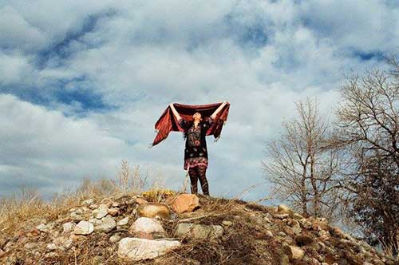
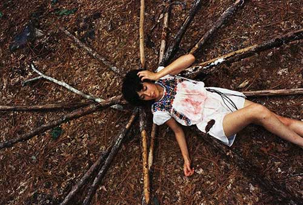
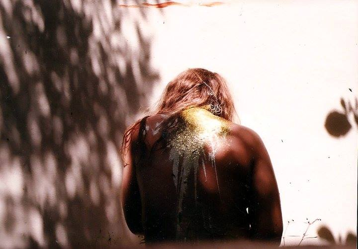
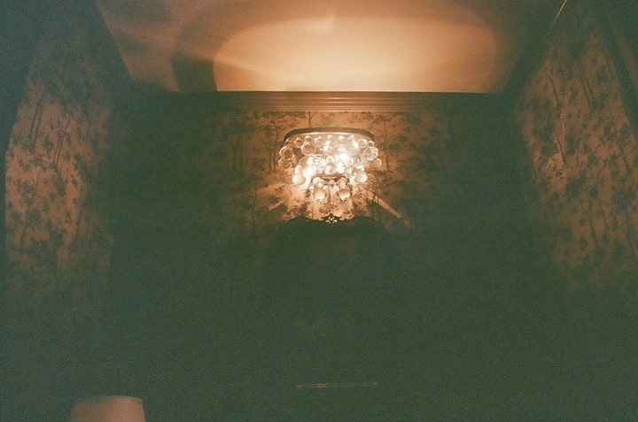

Freelance Writer and Photographer
Photography
I have been doing photography since I was 10 years old. It all started when my mom got a phone with a camera. Although the quality of photo was not good, I was fascinated that I could capture a moment so quickly. From there, I began shooting film. I started with Polaroids and then progressed into using a 35mm camera with black and white film. I took classes on that for three years while in high school and learned how to process and print pictures. After getting a little bored with that, I moved to color. I toy with digital cameras, but my heart will always have a special spot for film. To me, it's more personal and hands-on. Plus, I love the element of surprise.
When it comes to capturing an image, I like to take a natural situation and distort it so that the image doesn't reflect reality. The first picture that I have was actually taken in the middle of a junk yard outside of my friend's apartment in Boulder, CO. I like that I was able to create a nice image even though there are old cars, dumpsters and piles of trash just outside of the frame.
My dear friend Chantal in Boulder, CO.
Re-arranging sticks in Gainesville, FL.

Distorted trees just outside of Portland, OR.
 